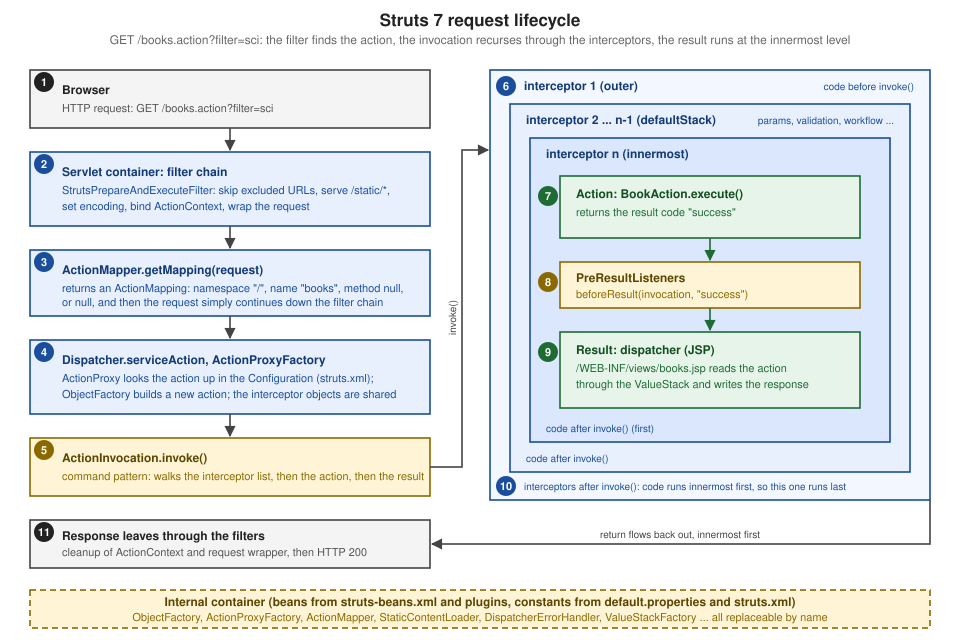

Architecture & Request Lifecycle
|
This content was generated with the assistance of AI and should be verified against the official documentation before being relied on in production. |
This page is written against Apache Struts 7.4.0 (released on 2026-10-02, with 6.12.0 as the maintained 6.x line),
Jakarta Servlet 6.1 and Jakarta Pages 4.0 on Apache Tomcat 11.0.26 and Java 21 (Struts 7 needs Java 17 and a Jakarta
Servlet 6 container). Everything was verified on 2026-10-08: the facts against the Core Developer Guide pages, the
struts2-core 7.4.0 jar (class listings, struts-default.xml, struts-beans.xml, default.properties) and the 7.4.0
source tag, and every example by building it into a Maven WAR and running it on Tomcat 11.0.26 with curl; the outputs
shown are the outputs of that run (only the context path was renamed to bookshelf). The page explains what happens
between the moment the servlet container hands a request to Struts and the moment the response leaves: which class does
which job, in which order, where each stage can be replaced, and what the secure defaults are. It is the map for the
rest of Part II, so later pages (configuration, packages, actions, results, interceptors) each zoom into one box of the
diagram on this page. The running scenario is the Bookshelf, a small catalogue of books; here it is a single action,
books, that is traced end to end.
The Request in Five Steps
The official "Architecture in a Nutshell" lists five steps. The table adds the 7.4.0 class that performs each one, so that a stack trace or a log line can be placed in the picture.
| Nutshell step | What happens | Main classes |
|---|---|---|
The browser requests a resource |
A URL such as |
Tomcat, |
The filter dispatcher finds the action |
The filter asks the action mapper whether the URL is an action and which one |
|
The interceptors apply common functionality |
Workflow, parameter population, validation, file upload and so on run before the action |
|
The action method executes |
The action usually reads or writes the model (a database, a service) and returns a result code |
Your class, often a subclass of |
The result renders the output |
A JSP, a FreeMarker template, a redirect, a stream or JSON is produced |
|
The same page describes the framework as a Model View Controller design in which Struts provides the controller and the view and integrates other technologies as the model. In that vocabulary the filter, the mapper, the proxy and the interceptors form the controller, the action is the adapter between the web and the model (the "traffic cop", in the page’s words, not the place for the heavy lifting), and the result and the tags are the view. The older books state it as "filter = controller, action = model, result = view"; the official wording is closer to the truth, because the action class normally delegates to services and only carries the data that the view needs. The Model 2 pattern that this repeats, a servlet-style controller forwarding to a view, is explained in MVC with Servlets and JSP; Struts is that pattern turned into a framework with configuration instead of code.
The Full Lifecycle
The next figure is the nutshell extended with the classes of Struts 7 and with the one fact that surprises most readers: the interceptors are not a pipeline that ends at the action, they are nested calls, and the result is executed at the innermost level, before any interceptor has run its "after" code.

The same flow as a sequence of calls for one GET /bookshelf/books.action?filter=sci:
The next table is the stage list of the figure with the extension point of each stage. "Hook" names the cheapest way to change the behaviour; the later sections show the ones that matter most.
| Stage | Class (default) | Responsibility | Hook |
|---|---|---|---|
1 Filter |
|
Initialises the framework once, then for each request decides: excluded URL, static resource, action or "not mine" |
|
2 Mapper |
|
Turns the request URI into an |
|
3 Dispatcher |
|
Creates the context map and the value stack, asks for a proxy, runs it, turns configuration errors into 404 |
|
4 Proxy |
|
Looks the action up in the |
|
5 Invocation |
|
Walks the interceptor list, calls the action, runs the pre-result listeners and the result (command pattern) |
|
6 Interceptors |
|
Cross-cutting behaviour before and after the action |
|
7 Action |
Your class |
Reads the input properties, calls the model, returns a result code |
|
8 Result |
|
Renders the response |
Result types, |
Stage 1: The Filter
Struts enters the web application as one servlet filter. Struts 7.4 offers two ways to register it, and the Core Developer
Guide describes both: the single StrutsPrepareAndExecuteFilter, which is the preferred setup, and the pair
StrutsPrepareFilter and StrutsExecuteFilter for integration with other frameworks such as SiteMesh.
web.xml, Servlet 6.1 schema)<web-app xmlns="https://jakarta.ee/xml/ns/jakartaee"
xmlns:xsi="http://www.w3.org/2001/XMLSchema-instance"
xsi:schemaLocation="https://jakarta.ee/xml/ns/jakartaee https://jakarta.ee/xml/ns/jakartaee/web-app_6_1.xsd"
version="6.1">
<filter>
<filter-name>struts2</filter-name>
<filter-class>org.apache.struts2.dispatcher.filter.StrutsPrepareAndExecuteFilter</filter-class>
</filter>
<filter-mapping>
<filter-name>struts2</filter-name>
<url-pattern>/*</url-pattern>
</filter-mapping>
</web-app>Filters and their mapping rules (declaration order, dispatcher types, the /* pattern) are the ones of the servlet
specification; see Servlet Fundamentals — Filters. Two Struts
specific consequences follow from the /* mapping: Struts sees every request, including those for pictures and
stylesheets, and it decides for each one whether it is "its" request. That decision is the heart of the filter. Reading
the 7.4.0 source of StrutsPrepareAndExecuteFilter.doFilter gives this order.
| Step | Action |
|---|---|
1 |
|
2 |
A request whose URI matches |
3 |
|
4 |
|
5 |
|
6 |
|
7 |
|
8 |
No mapping: |
9 |
In a |
Preparing and Executing in Two Filters
The single filter does steps 1 to 7 and step 8 in one place. When another filter has to run in between, for example a
decorator that needs the ActionContext of the request but must run before the action does, the work is split:
StrutsPrepareFilter does the preparation, StrutsExecuteFilter does the static content and action execution, and the
other filter sits between them in the filter order. The Bookshelf experiment uses a tiny filter that only reports whether
the ActionContext is already bound.
web.xml fragment)<filter>
<filter-name>struts-prepare</filter-name>
<filter-class>org.apache.struts2.dispatcher.filter.StrutsPrepareFilter</filter-class>
</filter>
<filter>
<filter-name>between</filter-name>
<filter-class>org.example.bookshelf.BetweenFilter</filter-class>
</filter>
<filter>
<filter-name>struts-execute</filter-name>
<filter-class>org.apache.struts2.dispatcher.filter.StrutsExecuteFilter</filter-class>
</filter>
<!-- the filter-mapping elements for all three use /* in this order: prepare, between, execute -->package org.example.bookshelf;
import jakarta.servlet.Filter;
import jakarta.servlet.FilterChain;
import jakarta.servlet.ServletException;
import jakarta.servlet.ServletRequest;
import jakarta.servlet.ServletResponse;
import java.io.IOException;
import org.apache.struts2.ActionContext;
public class BetweenFilter implements Filter {
private static final System.Logger LOG = System.getLogger("bookshelf.trace");
@Override
public void doFilter(ServletRequest req, ServletResponse res, FilterChain chain)
throws IOException, ServletException {
ActionContext ctx = ActionContext.getContext();
LOG.log(System.Logger.Level.INFO, "between filters: ActionContext bound = {0}", ctx != null);
chain.doFilter(req, res);
}
}The request GET /bookshelf/books.action?filter=sci was answered normally with this registration and the server log
contained
mapper /bookshelf/books.action -> namespace=/ name=books method=null
between filters: ActionContext bound = trueso the custom filter saw a bound ActionContext after the preparation filter had already consulted the mapper. With the
single filter, any filter declared before it sees no ActionContext at all, because Struts has not created it yet.
Telling Struts to Ignore a URL
A URL that must never reach Struts, for instance a health probe served by the container, is excluded with a regular
expression that is matched against getRequestURI(), so it includes the context path. The pattern is a constant, not a
filter mapping, which keeps the /* mapping (and Struts' static content) intact.
/bookshelf/health from Struts (struts.xml)<constant name="struts.action.excludePattern" value=".*/health"/>With a plain file health (content ok) in the web application root, the request below is answered by Tomcat’s default
servlet and the mapper is never consulted (the trace shows no mapper line for it).
$ curl -i http://localhost:8080/bookshelf/health
HTTP/1.1 200
...
okWithout the constant the same URL maps to an action named health and gives the Struts 404 shown in the outcome table
for /nothing below. The exclusion is a routing tool, not an access control: an excluded URL is served by whatever the
rest of the chain does with it.
Stage 2: The ActionMapper
The ActionMapper interface translates between HTTP requests and action invocation requests in both directions. In 7.4.0
it declares three methods: getMapping(request, configManager), which returns an ActionMapping or null;
getMappingFromActionName(name); and getUriFromActionMapping(mapping), which builds a URL for the tags (s:url,
s:form) when a page links to an action. The mapper does not have to check that the action exists: it only parses the
URL. Whether the action is configured is decided later, by the proxy.
| Step | Behaviour |
|---|---|
Strip path parameters |
Everything from the first |
Drop the extension |
The extension must be one of |
Split namespace and name |
The part before the last |
Special parameters |
The |
Validate the names |
The namespace must match |
What the Mapper Decides: Observed Outcomes
The Bookshelf was deployed with a mapper that logs its decision (the next section shows the class). The table is what
curl and the log showed for each request.
| Request | Mapper decision | Outcome |
|---|---|---|
|
Namespace |
200, the books page |
|
Namespace |
200, same page |
|
Path parameter dropped |
200 |
|
No mapping ( |
The filter chain continues, Tomcat answers 404 with its own page; Struts is not involved |
|
No mapping |
Tomcat 404 |
|
Name |
404 from Struts: "There is no Action mapped for namespace [/] and action name [nothing] associated with context path [/bookshelf]." |
|
Name |
The same Struts 404, with the whole |
|
Plain request parameters, the prefixes are off |
200, the books page; the parameters are ignored |
|
Excluded by |
Served by Tomcat, |
|
Static content loader (before the mapper) |
200, |
|
Not a static path in 7.4.0 |
404 |
Replacing the Mapper
The mapper is a bean of type org.apache.struts2.dispatcher.mapper.ActionMapper; a constant chooses which named bean is
used. The Core Developer Guide shows the registration and says that a custom mapper must implement the interface and have
a default constructor. For the experiment the mapper extends DefaultActionMapper and only adds a log line.
struts.xml)<bean type="org.apache.struts2.dispatcher.mapper.ActionMapper" name="traceMapper"
class="org.example.bookshelf.TraceActionMapper"/>
<constant name="struts.mapper.class" value="traceMapper"/>package org.example.bookshelf;
import jakarta.servlet.http.HttpServletRequest;
import org.apache.struts2.config.ConfigurationManager;
import org.apache.struts2.dispatcher.mapper.ActionMapping;
import org.apache.struts2.dispatcher.mapper.DefaultActionMapper;
public class TraceActionMapper extends DefaultActionMapper {
private static final System.Logger LOG = System.getLogger("bookshelf.trace");
@Override
public ActionMapping getMapping(HttpServletRequest request, ConfigurationManager configManager) {
ActionMapping mapping = super.getMapping(request, configManager);
LOG.log(System.Logger.Level.INFO, "mapper {0} -> {1}", request.getRequestURI(),
mapping == null ? "no mapping, the filter chain continues"
: "namespace=" + mapping.getNamespace() + " name=" + mapping.getName()
+ " method=" + mapping.getMethod());
return mapping;
}
}Because the mapper is also used in the other direction, a page that renders <s:url action="books"/> asks the same
bean for the URL; in the Bookshelf the page printed /bookshelf/books.action, using the first extension of the list. A
custom mapper that maps /person/1 to an action must therefore also implement getUriFromActionMapping, or the generated
links will not match the URLs the mapper understands.
Struts ships four more mappers as beans: composite (tries several mappers in the order given by
struts.mapper.composite), prefix (selects a mapper by URL prefix with struts.mapper.prefixMapping, used together
with the prefix action proxy factory), and restful and restful2. The two RESTful mappers are deprecated in 6.12.0
and 7.4.0 in favour of the REST plugin (removal is tracked as WW-5708), which has its own mapper; the REST Plugin
page covers it.
Stage 3: Dispatcher, ActionProxy and ActionInvocation
With a mapping in hand the filter calls Dispatcher.serviceAction. The Dispatcher is the main point of control of the
framework, created once by the filter’s init. For each request it creates the context map (request, session,
application, parameters), copies the existing value stack if the request is a forward, asks the ActionProxyFactory for
an ActionProxy for the namespace, name and method, and calls proxy.execute(). If the mapping carries a result of its
own (a mapper may map a URL straight to a Result) that result is executed instead and no action runs.
The three objects have distinct jobs, which the official page sums up as: the proxy encapsulates how an action can be obtained, the invocation encapsulates how it is executed.
| Object | Job | Notes |
|---|---|---|
|
Creates proxies ( |
An interface in 7.4.0, selected by the bean name in |
|
Knows the namespace, action name, method and the |
One per executed action; |
|
Holds the action, the value stack, the interceptor iterator, the result code and the pre-result listeners; |
|
When Something Goes Wrong Here
An action name that is mapped but not configured makes the proxy throw a ConfigurationException. serviceAction catches
it, logs it and reports HTTP 404 through the DispatcherErrorHandler; any other exception becomes HTTP 500 (the
default struts.handle.exception=true) or is rethrown as a ServletException. The default handler uses
HttpServletResponse.sendError, so the container’s error pages (web.xml, see
Servlet Fundamentals — Error Pages) apply. A custom handler is a
bean of type DispatcherErrorHandler selected with struts.dispatcher.errorHandler.
struts.xml and a handler that logs and delegates)<bean type="org.apache.struts2.dispatcher.DispatcherErrorHandler" name="traceErrors"
class="org.example.bookshelf.TraceErrorHandler"/>
<constant name="struts.dispatcher.errorHandler" value="traceErrors"/>package org.example.bookshelf;
import jakarta.servlet.http.HttpServletRequest;
import jakarta.servlet.http.HttpServletResponse;
import org.apache.struts2.dispatcher.DefaultDispatcherErrorHandler;
public class TraceErrorHandler extends DefaultDispatcherErrorHandler {
private static final System.Logger LOG = System.getLogger("bookshelf.trace");
@Override
public void handleError(HttpServletRequest request, HttpServletResponse response, int code, Exception e) {
LOG.log(System.Logger.Level.INFO, "error handler HTTP {0}: {1}", code, e.getMessage());
super.handleError(request, response, code, e);
}
}For GET /bookshelf/nothing the log printed the line below, and the browser received the 404 page with the same message.
mapper /bookshelf/nothing -> namespace=/ name=nothing method=null
error handler HTTP 404: There is no Action mapped for namespace [/] and action name [nothing] associated with context path [/bookshelf].Stage 4: The Interceptors
ActionInvocation.invoke() is a recursion. Each call takes the next interceptor from the list and calls its
intercept(invocation); an interceptor that wants the rest of the stack to run calls invocation.invoke() itself and
gets back the result code when everything inside it, the action and the result included, has finished. When the list is
exhausted the invocation calls the action. That is why the figure draws nested frames, and why the official page on
writing interceptors warns that invoke returns only after the result has been called (after the JSP has been
rendered), which makes interceptors a good place for open-session-in-view logic and a poor place to modify the response
after the page is written.
An interceptor can also stop the chain: if it returns a result code without calling invoke(), nothing inside it runs and
that code selects the result. Validation and workflow do exactly that when input is invalid.
The Default Stack
An action that does not name an interceptor stack gets defaultStack, set as default-interceptor-ref of the
struts-default package. The list below was read from struts-default.xml in the 7.4.0 jar: 24 interceptors, in this
order, taken from the 38 interceptors that the file declares.
| # | Name | Role (details on Interceptors) |
|---|---|---|
1 |
|
Maps an exception thrown further in to a result (see the exception handling page) |
2 |
|
Lets parameter names be aliased to other names (used with chained actions) |
3 |
|
Hands the servlet objects to actions that declare the |
4 |
|
Restricts an action to the HTTP methods allowed for it |
5 |
|
Chooses the locale, for example from the |
6 |
|
Content-Security-Policy header (parameters |
7 |
|
Calls |
8 |
|
Copies properties from the previous action in a chain |
9, 10 |
|
Use a model object instead of the action as the parameter target |
11 |
|
File upload for |
12, 13, 14 |
|
Merge or default form values that browsers omit or submit in parts |
15 |
|
Sets the |
16 |
|
Sets parameters taken from the |
17 |
|
Sets the request parameters on the action (subject to the OGNL and |
18 |
|
Remembers type-conversion failures as field errors |
19, 20, 21 |
|
Cross-origin isolation headers and Fetch Metadata resource isolation; in the 7.4.0 stack |
22 |
|
Runs the validators (excluded methods |
23 |
|
Returns the |
24 |
|
Serves the debugging page when the development mode asks for it |
One Action Per Request, One Interceptor For All
The proxy copies the interceptor list from the ActionConfig into an iterator for every request, but the interceptor
objects in that list were built once when the configuration was loaded. So an action is a new object for each request
and needs no thread safety, while an interceptor is shared by all requests and must be thread safe (fields set by
parameters in struts.xml are configuration, not per-request state). The experiment below prints the identity of each
object to prove it.
Code Between the Action and the Result
A PreResultListener runs after the action has returned its result code and before the result is executed. It can be
added by an action or, more usually, by an interceptor. In DefaultActionInvocation.invoke the listeners run in the order
they were added, which is the order of the interceptors that registered them (outer first).
struts.xml)<package name="default" extends="struts-default" namespace="/">
<interceptors>
<interceptor name="trace" class="org.example.bookshelf.TraceInterceptor"/>
<interceptor-stack name="tracedStack">
<interceptor-ref name="trace">
<param name="label">outer</param>
</interceptor-ref>
<interceptor-ref name="defaultStack"/>
<interceptor-ref name="trace">
<param name="label">inner</param>
</interceptor-ref>
</interceptor-stack>
</interceptors>
<default-interceptor-ref name="tracedStack"/>
<action name="books" class="org.example.bookshelf.BookAction">
<result>/WEB-INF/views/books.jsp</result>
</action>
</package>package org.example.bookshelf;
import org.apache.struts2.ActionInvocation;
import org.apache.struts2.interceptor.AbstractInterceptor;
public class TraceInterceptor extends AbstractInterceptor {
private static final System.Logger LOG = System.getLogger("bookshelf.trace");
private String label = "trace";
public void setLabel(String label) {
this.label = label;
}
@Override
public String intercept(ActionInvocation invocation) throws Exception {
LOG.log(System.Logger.Level.INFO, "{0} before action={1}, interceptor instance {2}", label,
invocation.getProxy().getActionName(), Integer.toHexString(System.identityHashCode(this)));
invocation.addPreResultListener((inv, resultCode) ->
LOG.log(System.Logger.Level.INFO, "{0} pre-result, result code {1}", label, resultCode));
String resultCode = invocation.invoke();
LOG.log(System.Logger.Level.INFO, "{0} after result code {1}", label, resultCode);
return resultCode;
}
}Stages 5 and 6: The Action and the Result
When the interceptor list is exhausted, invokeActionOnly calls the action method named by the mapping, or the one
configured in struts.xml, or execute. The action is a new instance built by the ObjectFactory for this request (the
next-but-one section) and is pushed on the value stack by the invocation, which is how the view later reads its
properties by name. The returned string is the result code; ActionSupport defines the usual constants (SUCCESS,
INPUT, ERROR, LOGIN, NONE). The invocation looks up the <result> of that name (a <result> without a name is
success), builds the result through the ObjectFactory, and executes it. A result is itself called from inside the
innermost invoke(), so by the time the first interceptor’s "after" code runs, the response has been produced.
package org.example.bookshelf;
import java.util.List;
import org.apache.struts2.ActionSupport;
import org.apache.struts2.interceptor.parameter.StrutsParameter;
public class BookAction extends ActionSupport {
private static final System.Logger LOG = System.getLogger("bookshelf.trace");
private String filter;
public String getFilter() {
return filter;
}
@StrutsParameter
public void setFilter(String filter) {
this.filter = filter;
}
@Override
public String execute() {
LOG.log(System.Logger.Level.INFO, "action execute(), filter={0}", filter);
return SUCCESS;
}
public List<String> getTitles() {
LOG.log(System.Logger.Level.INFO, "result the JSP reads titles from the action");
return List.of("Dune", "Neuromancer");
}
}<%@ page contentType="text/html; charset=UTF-8" pageEncoding="UTF-8" session="false" %>
<%@ taglib prefix="s" uri="/struts-tags" %>
<!DOCTYPE html>
<html>
<body>
<h1>Bookshelf (Struts)</h1>
<p>Filter: <s:property value="filter"/></p>
<ul>
<s:iterator value="titles"><li><s:property/></li></s:iterator>
</ul>
<p>Link built by the ActionMapper: <s:url action="books"/></p>
</body>
</html>The @StrutsParameter annotation on setFilter is required in Struts 7: the params interceptor sets only the
injection points that carry it (the struts.parameters.requireAnnotations default is true in 7.4.0). The view lives
under WEB-INF, so a browser can reach it only through the action. The result is a dispatcher result (the default
type), which forwards to the JSP through the servlet RequestDispatcher; the JSP’s s:property tags then read filter
and titles through the value stack. The parameter and value stack rules have pages of their own.
Worked Example: Tracing a Bookshelf Request
The experiment combines the classes above in one WAR: the mapper, an ObjectFactory that reports the action it builds
(shown in the next section), the traced stack, the action and the view. It was deployed as a Maven WAR on Tomcat
11.0.26 and called twice.
$ curl -s "http://localhost:8080/bookshelf/books.action?filter=sci"
<!DOCTYPE html>
<html>
<body>
<h1>Bookshelf (Struts)</h1>
<p>Filter: sci</p>
<ul>
<li>Dune</li><li>Neuromancer</li>
</ul>
<p>Link built by the ActionMapper: /bookshelf/books.action</p>
</body>
</html>The log of the second request (thread names and times removed; each line is one System.Logger call):
mapper /bookshelf/books.action -> namespace=/ name=books method=null
object factory built BookAction@6b0a7653
outer before action=books, interceptor instance 223a3148
inner before action=books, interceptor instance 7e96c650
action execute(), filter=sci
outer pre-result, result code success
inner pre-result, result code success
result the JSP reads titles from the action
inner after result code success
outer after result code successThe first request logged the same ten lines with the same interceptor instance ids (223a3148 and 7e96c650) and a
different action (BookAction@d6f8f04).
| Log line | What it proves |
|---|---|
|
The mapper runs before anything of the action exists; the namespace is |
|
A new action object is built for the request; the second request had a different identity hash |
|
The outer interceptor’s code runs first; the whole |
|
The |
|
Pre-result listeners run in registration order, so the outer one first, and before the view |
|
The JSP is rendered here, inside the innermost |
|
Only now do the interceptors unwind, innermost first, with the result code |
Interceptor instance ids repeat across requests |
Interceptors are shared between requests; thread safety is the interceptor author’s job |
The Internal Container and the ObjectFactory
Most objects named on this page are not created with new by other framework classes. Struts has an internal dependency
injection container, built from bean and constant declarations, and each replaceable part of the framework is a bean
with a name. The 7.4.0 jar declares the defaults in struts-beans.xml (included by struts-default.xml), the plugins add
theirs in struts-plugin.xml, and an application’s struts.xml can add or select its own, always the same way: declare
a bean of the extension point’s type under a name, then point the constant at the name.
Bean type (org.apache.struts2...) |
Default (bean name struts) |
Constant |
|---|---|---|
|
|
|
|
|
|
|
|
|
|
|
|
|
|
|
|
|
|
|
|
|
|
|
|
|
|
|
The ObjectFactory is the most important of them. The official page states that all objects created by the framework are
instantiated by it (actions, results, interceptors, validators, converters, unknown handlers), which is what lets
integrations such as the Spring plugin substitute container-managed objects: the Spring plugin’s factory makes the
actions Spring beans. Since 2.3.16 the factory delegates each kind of object to a dedicated factory interface, so one
part can be changed without replacing the whole class. The experiment’s factory only logs the action it built.
<bean type="org.apache.struts2.ObjectFactory" name="traceFactory"
class="org.example.bookshelf.TraceObjectFactory"/>
<constant name="struts.objectFactory" value="traceFactory"/>package org.example.bookshelf;
import java.util.Map;
import org.apache.struts2.ObjectFactory;
import org.apache.struts2.config.entities.ActionConfig;
public class TraceObjectFactory extends ObjectFactory {
private static final System.Logger LOG = System.getLogger("bookshelf.trace");
@Override
public Object buildAction(String actionName, String namespace, ActionConfig config,
Map<String, Object> extraContext) throws Exception {
Object action = super.buildAction(actionName, namespace, config, extraContext);
LOG.log(System.Logger.Level.INFO, "object factory built {0}@{1}", action.getClass().getSimpleName(),
Integer.toHexString(System.identityHashCode(action)));
return action;
}
}The official page registers a custom factory with struts.objectFactory=... in struts.properties; a bean plus a
constant in struts.xml works the same way and is what the experiment used (the factory printed the line seen in the
trace). Dependency injection into actions and the CDI integration have their own page, Dependency Injection and CDI.
Startup: How the Configuration Is Assembled
Everything above rests on the Configuration that the filter’s init builds once. Dispatcher.init loads the sources in
a fixed order, and a later source can override a constant or bean of an earlier one. The order below is the order of the
calls in the 7.4.0 source.
| # | Source | Content |
|---|---|---|
1 |
|
Every framework constant with its default ( |
2 |
|
The built-in |
3 |
Java configuration providers |
Programmatic configuration through |
4 |
|
Legacy overrides, still read when present |
5 |
Custom providers from the |
Any class that implements |
6 |
The filter’s init-parameters |
Any other init-param is treated as a constant |
7 |
Standard object aliases, then the deferred |
Late bindings |
A ConfigurationProvider is the unit that feeds this process: init(Configuration), register(...) for beans and
constants, and loadPackages() for packages, actions and results. The default provider reads struts.xml; a custom one
can build the configuration in code. It is registered in web.xml, as the web.xml page documents.
web.xml fragment)<filter>
<filter-name>struts2</filter-name>
<filter-class>org.apache.struts2.dispatcher.filter.StrutsPrepareAndExecuteFilter</filter-class>
<init-param>
<param-name>configProviders</param-name>
<param-value>org.example.bookshelf.TraceConfigProvider</param-value>
</init-param>
</filter>The provider of the experiment implements the interface and only logs its three calls. When the web application started, the log showed them in this order, followed by the first request.
config provider init
config provider register (beans and constants)
config provider loadPackagesHow struts.xml itself is written and loaded, the constants, and reloading in development mode are covered by
Configuration: struts.xml & Constants.
Static Content: the Requests Struts Answers Without an Action
Struts' own resources (the JavaScript and CSS of the xhtml and css_xhtml themes) live inside the core jar and are
served by the StaticContentLoader, step 3 of the filter, before the mapper is asked. The default loader answers URLs that
start with /static/ (the constant struts.ui.staticContentPath), searching the static package of the classpath, and
the feature is switched off with struts.serve.static=false. The official page recommends extracting the files into the
web application and letting the container serve them in production, because the loader is not optimised for static
content. If the filter mapping is narrowed (for example *.action), the static path must be mapped explicitly or these
requests never reach Struts.
$ curl -s -o /dev/null -w "%{http_code} %{content_type}\n" http://localhost:8080/bookshelf/static/utils.js
200 text/javascript
$ curl -s -o /dev/null -w "%{http_code}\n" http://localhost:8080/bookshelf/struts/utils.js
404Struts 1 Versus Struts 2
Struts 1 is end of life (April 2013) and its documentation is no longer on the project site, but most legacy applications and older books describe it, so the differences matter when reading either. The table follows the categories of the wiki’s "Comparing Struts 1 and 2" page, in condensed form, with the 7.4.0 situation added.
| Topic | Struts 1 (ActionServlet) |
Struts 2 (filter plus interceptors) |
|---|---|---|
Entry point |
One servlet, |
A servlet filter; the mapper decides per request whether it is an action |
Action class |
Extends an abstract |
Any class with a public no-argument method returning a |
Threading |
Actions are singletons and must be thread safe |
A new action per request, so no thread safety needed (verified in the trace above) |
Servlet API coupling |
The request and response are parameters of |
The action sees maps, or opts in to the servlet objects with |
Testing |
Needs mock servlet objects |
Instantiate, set properties, call the method |
Input |
An |
Properties of the action or of a model object, populated by the |
Expression language |
JSTL EL |
OGNL, evaluated against the value stack |
Binding values to views |
The standard JSP scopes |
The |
Type conversion |
Mostly strings with BeanUtils |
OGNL-based converters configured per class or application (see Type Conversion) |
Validation |
|
|
Control of execution |
One lifecycle per module |
A different interceptor stack per action |
Status |
End of life in April 2013; no security patches |
Struts 7.4.0 and 6.12.0 supported |
The wiki table dates from 2007, the Struts 2.0 era. Its rows are still a good map, but a few items need the modern
reading: the parameter binding now needs @StrutsParameter, the Action classes, interceptors and OGNL support classes
are in org.apache.struts2 instead of com.opensymphony.xwork2, and the Struts 1 request flow described by the older
books exists only in applications that have not been migrated. Struts 1 (Classic) & Migration covers the
legacy flow and the migration steps.
Security Notes on the Request Pipeline
Several of the secure defaults of Struts 7.4 sit in the stages above. They are the reason a fresh Bookshelf rejects URLs that the older books routinely used.
| Default (7.4.0) | Where it acts | Why it matters |
|---|---|---|
|
Mapper |
|
|
Mapper |
The |
Allowed-name regular expressions |
Mapper |
Namespace, action and method names outside a safe character set fall back to defaults |
|
Mapper and configuration |
A URL reaches an action only through the exact namespace; bulletin S2-057 (CVE-2018-11776) was a remote code execution through namespace resolution with the older settings |
Views under |
Result |
A JSP in |
|
Interceptors ( |
Only annotated injection points are populated, and OGNL may only touch allowlisted classes |
|
Dispatcher, interceptors |
Debugging output and the |
|
Filter |
An exclusion removes a URL from Struts' handling; it is not an authorisation rule |
A custom ActionMapper, ActionProxyFactory or ObjectFactory sits in front of or under all these protections, so a
replacement should extend the default class and call super, and any URL parsing it adds must be as strict as the
default regular expressions. Security Hardening and Security Bulletins list the other settings and the
history in full.
Pitfalls and Error Names
| Symptom or error | Cause | Fix |
|---|---|---|
"There is no Action mapped for namespace [/] and action name [x] associated with context path [/bookshelf]" (observed) |
The URL parsed to an action name that |
Fix the name or the |
Tomcat’s own 404 page for |
The extension is not in |
Use |
A legacy |
Struts 1 habit; |
Change the links, or set |
|
|
Use |
|
The filter runs before Struts creates the context |
Place the filter after |
Static files from the Struts jar ( |
The filter never sees the request |
Add a filter mapping for the static path, or extract the files into the web application (observed: the default path is |
A request is handled by Struts although it should be served by Tomcat |
The |
Exclude it with |
|
Dynamic method invocation and the prefixes are off by default |
Map methods explicitly or with wildcards (see the wildcard mappings page); do not re-enable DMI |
An interceptor corrupts data between users |
A per-request value kept in a field of an interceptor (shared by all requests) |
Keep state in locals, the invocation or the action; fields only for configuration |
An interceptor’s "after" code cannot change the page |
|
Change the result before it runs, with a |
The custom mapper’s links do not match its URLs |
Only |
Implement both directions |
Custom |
The constant names a bean that was not declared, or the bean is declared with another |
Declare |
Old docs show |
Packages moved to |
Search and replace the package prefix |
A filter placed after |
The action is executed inside the Struts filter; the chain continues only for non-actions |
Put the filter before Struts, or use the split registration |
|
|
Call |
HTTP 500 with the exception in the response during development |
|
Read the log; do not enable development mode in production |
What Changed Recently
| Version | Change |
|---|---|
Struts 7.4.0 and 6.12.0 (2026-10-02) |
|
Struts 7.4.0 |
The REST plugin’s |
Struts 7.0.0 |
Java 17 minimum; Jakarta EE namespace; all classes of |
Struts 6.x |
The 6.x line still uses the |
Struts 2.5 |
Strict method invocation and the |
Struts 2.3.16 |
|
Where the Books Are Outdated
Struts in Action (Manning, 2002) describes Struts 1.0 and 1.1, and Struts 2 in Action (Manning, 2008) describes Struts 2.0; both are listed in the section bibliography and neither is quoted here. The architecture they teach (front controller, mapper, interceptor chain, result) survived; the class names, the filter and several defaults did not.
| The book’s era | Today (Struts 7.4) |
|---|---|
|
|
|
|
The Struts 1 request flow: |
A filter, interceptors and |
A servlet mapping such as |
A filter mapping, default extension |
Free dynamic method invocation ( |
Off by default; strict method invocation with |
Any public setter is populated from request parameters |
Only |
|
The Jakarta EE schema, Servlet 6.1 or 6.0 |
Platform: Servlet 2.4, JSP 2.0, Java 5 to 7 |
Java 17 or later, Jakarta Servlet 6 or later; Tomcat 10.1 or 11 for 7.x |
Static content under |
|
The Dojo plugin and the ajax theme of Struts 2.0 and 2.1 |
Gone; the JSON and REST plugins and plain JavaScript replace them |
The official pages carry the same problem in places, and they are worth reading with that in mind: the Core Developer
Guide’s "Platform Requirements" section of the nutshell page still says Servlet API 2.4, JSP API 2.0 and Java 7, the big
picture page still draws FilterDispatcher and ActionContextCleanUp, the Action Proxy page shows static
ActionProxyFactory.setFactory calls that the 7.4.0 interface no longer has, and the writing-interceptors page still
imports com.opensymphony.xwork2.interceptor.Interceptor. When a name on those pages disagrees with the 7.4.0 jar, the
jar wins.
Source: Manning — Struts in Action
Source: Manning — Struts 2 in Action
References
-
Struts Core Developer Guide — Apache Struts 2 Architecture in a Nutshell
-
Struts Core Developer Guide — Nutshell — Platform Requirements
-
Struts Core Developer Guide — web.xml — the two filter options
-
Struts Core Developer Guide — web.xml — Exclude specific URLs
-
Struts Core Developer Guide — web.xml — Custom configuration provider
-
Struts Core Developer Guide — Static Content — Default Content Loader
-
Struts Core Developer Guide — Static Content — Preventing Struts from handling a request
-
Struts Core Developer Guide — ActionMapper — DefaultActionMapper
-
Struts Core Developer Guide — ActionMapper — Allowed action name RegEx
-
Struts Core Developer Guide — ActionMapper — Custom ActionMapper
-
Struts Core Developer Guide — ActionMapper — CompositeActionMapper
-
Struts Core Developer Guide — Action Proxy & ActionProxy Factory
-
Struts Core Developer Guide — ObjectFactory — Extend ObjectFactory
-
Struts Core Developer Guide — ObjectFactory — Define dedicated factory
-
Struts Core Developer Guide — Configuration Provider & Configuration — Configuration provider
-
Struts Core Developer Guide — Interceptors — The Default Configuration
-
Struts Core Developer Guide — Interceptors — Order of Interceptor Execution
-
Struts Core Developer Guide — Writing Interceptors — Interceptor interface
-
Struts Core Developer Guide — Writing Interceptors — Thread Safety
-
Struts Core Developer Guide — PreResultListener — By an Interceptor
-
Apache Struts 7.4.0 source — StrutsPrepareAndExecuteFilter.java